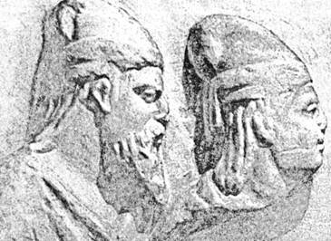
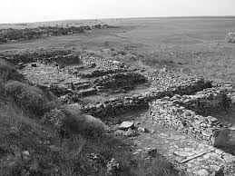

Пам'ятки України
Стародавня доба
До нової ери - Нова ераПізні скіфи:
 
Мури Неаполя Скіфського (реконструкція Т. М. Висоцької)
Цікаві факти:
Пізньоскіфське царство у Криму виникло як своєрідна опозиція кочовим сарматам та античним містам, насамперед Херсонесу. Його початкову історію відбиває поява на зорі II ст. до н. е. городищ у передгірській смузі (Кермен-Кир, Булганак) та селищ. Одне з таких селищ, засноване на скелястому береговому виступі р. Салгір (територія сучасного Сімферополя), стало столицею цього царства. Ймовірно, воно і є Неаполем Скіфським, відомим за писемними джерелами.
Разом із Софійським собором внесена до переліку Світової спадщини ЮНЕСКО. На території лаври діє Національний Києво-Печерський історико-культурний заповідник, якому було надано статус національного у 1996 р.[2] Монастир Української православної церкви Московського патріархату зі статусом лаври знаходиться на території Нижній лаврі. Обидві частини лаври відкриті для відвідувачів
Обнесений в останній третині II ст. до н. е. могутніми мурами, Неаполь Скіфський перетворюється на фортецю і царську ставку.Можливо, що заснування міста відбулося за активної участі вихідців із Ольвії, яка потерпала від варварів (згадаємо декрет на честь Протогена) і шукала захисту у правителів Кримської Скіфії, зокрема царя Скілура. Увесь зовнішній вигляд "міста" — форми його палаців, громадських та культових будівель — несе на собі печать грецької культури (архітектура, оздоблення фресками, скульптура, теракотові статуетки богинь, написи).